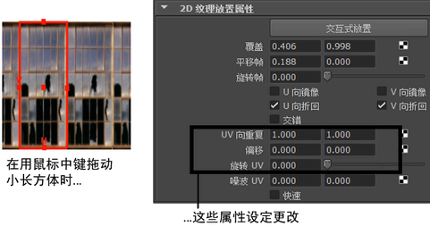
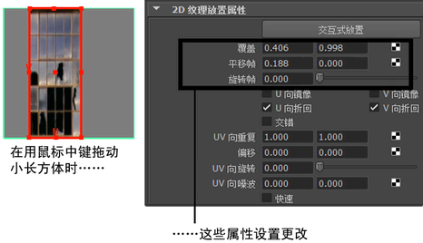

默认情况下，“纹理放置工具”(Texture Placement tool)针对“标签映射”(Label Mapping)设置，让您可以像标签一般拉伸、收缩、移动和旋转纹理。该工具可以改为针对“曲面放置”(Surface Placement)设置，让您可以像墙纸一般拉伸、收缩、移动和旋转纹理。
在这两种情况下，U 向折回和 V 向折回控制纹理在水平和垂直方向上的平铺（基于对象上的 UV 坐标）。
若要更改“纹理放置工具”(Texture Placement Tool)，请双击工具栏中的“纹理放置工具”(Texture Placement Tool)图标，或选择“纹理 > NURBS 纹理放置工具”(Texturing > NURBS Texture Placement Tool) >  详细信息请参见“纹理”(Texturing)菜单。。
详细信息请参见“纹理”(Texturing)菜单。。
曲面放置
当拖动操纵器控制柄时，UV 向重复、偏移和UV 向旋转的属性设置将在 place2dTexture 的“属性编辑器”(Attribute Editor)中发生更改。这样可以让您如墙纸一般拉伸、收缩、移动和旋转纹理。

标签映射
当拖动操纵器控制柄时，“覆盖”(Coverage)、“平移帧”(Translate Frame)和“旋转帧”(Rotate Frame)的属性设置将在 place2dTexture 的属性编辑器中发生更改。这样可以让您如标签一般拉伸、收缩、移动和旋转纹理。
